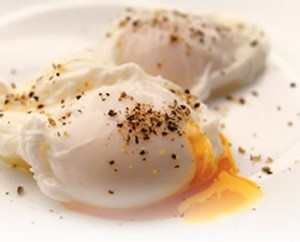

Eggs

Eggs - Chicken Periods
Yes, eggs are chicken periods. Yes, that's gross to think about.
But really all meat and animal byproduct consumption is a moral and ethical mess,
so why concern yourself with any of that?
And anyway this is a recipe page so let's get crackin! (hehe)
Ingredients
- Eggs (2-3)
- Butter (1 tbsp)
- Salt and Pepper to taste
Steps
- Heat skillet on medium heat.
- When skillet has warmed add 1 tbsp butter and let it melt.
- Crack the eggs flat on the counter.
You run the risk of shell in your egg if you crack it on the edge of the pan.
- Cook each egg until you see the whites of the eggs start to gently bubble.
- When the edges of the egg have turned white and are gently bubbling flip the egg.
- Cook an additional 2 minutes.
- Remove from heat, serve with buttered toast.